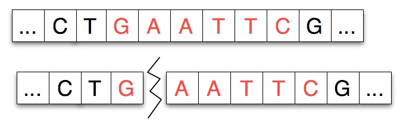
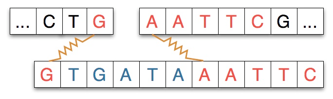
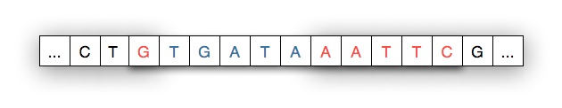

In this activity, you will continue with the DNA implementation from the earlier lab activity. We are providing you with an implementation for the tasks of the previous exercise and for an additional operation. But this implementation has some bugs that you will have to isolate and fix.
Before starting on new features, understand the provided implementation. Identify differences between your own implementation and the provided implementation. What are the design choices that you can adopt in your own work? An example is how one can avoid magic numbers by naming all constants up-front.
Then start with the test cases provided. You will find that some of the test cases fail.
Moreover, the implementation of DNA is not perfect. There may be residual bugs that are not caught by the provided tests. Find and fix them too.
This exercise touches upon two important ideas in Java and other similar languages:
You should read some relevant material before going further.
The static keyword in Java (CodeGuru)
The reading material on static alone is insufficient to help you debug both problems. You will need to do some more investigation and exploration on your own ... but it should not be all that difficult.
The new operation that you will have to understand is a cut-and-splice operation. For this operation, you are given a sequence of codons (without junk) called a restriction enzyme and a splice position. You are also given a splicee, which is another enzyme (sequence of codons, no junk).
The cut-and-splice operation finds all occurrences of the restriction enzyme in a DNA sequence. Then, it splits the DNA sequence at the splice position, which is a position in the matching site for the restriction enzyme, and inserts the splicee at that position, and then stitches back the rest of the DNA sequence to the end of the splicee.
This operation also removes all junk in the DNA sequence. If the restriction enzyme is not present in a DNA sequence then this operation simply cleans the DNA sequence of all junk.
For this exercise, we have assumed that enzymes are codon sequences. This not strictly true. For a bit more detail about how restriction enzyme cleaving works, one can read the optional subsection below.
Restriction Enzyme Cleaving
Restriction enzymes cut a strand of DNA at a specific location, the binding site, typically separating the DNA strand into two pieces.
Given a strand of DNA "aatccgaattcgtatc" and a restriction enzyme like EcoRI "gaattc", the restriction enzyme locates each occurrence of its pattern in the DNA strand and divides the strand into two pieces at that point, leaving either blunt or sticky ends.
Restriction enzymes have two properties or features: the pattern of DNA that marks a site at which separation occurs and a number/index that indicates how many characters/nucleotides of the pattern attach to the left-part of the split strand. For example, the diagram below shows a strand split by EcoRI. The pattern for EcoRI is "gaattc" and the index of the split is one indicating that the first nucleotide/character of the restriction enzyme adheres to the left part of the split.

In some experiments, and in our work, another strand of DNA will be spliced into the separated strand. The strand spliced in matches the separated strand at each end as shown in the diagram below where the spliced-in strand matches with G on the left and AATTC on the right as you view the strands.
When the spliced-in strand joins the split strand we see a new, recombinant strand of DNA as shown below. The shaded areas indicate where the original strand was cleaved/cut by the restriction enzyme.
Three scientists shared the Nobel Prize in 1978 for the discover of restriction enzymes. They are also an essential part of the process called PCR polymerase chain reaction which is one of the most significant discoveries/inventions in chemistry and for which Kary Mullis won the Nobel Prize in 1993. Of significance to us in Vancouver, Mullis shared the Nobel Prize that year with Michael Smith, who was a Professor at UBC. Their work laid the foundation for genetic engineering.
You can see animations and explanations of both restriction enzymes and PCR at DnaTube and Cold Spring Harbor Dolan DNA Learning Center.
Grading
You will answer some questions on PrairieLearn and you will submit your implementation that fixes the bugs in the provided code.
You should submit your code on PrairieLearn and via git to GitHub. If you submit your code correctly to GitHub and it matches your PrarieLearn submission then the grade on PrairieLearn for this lab will be unchanged. If you do not submit your work to GitHub correctly then your grade will be lowered by 2 points (the equivalent of a letter grade reduction).